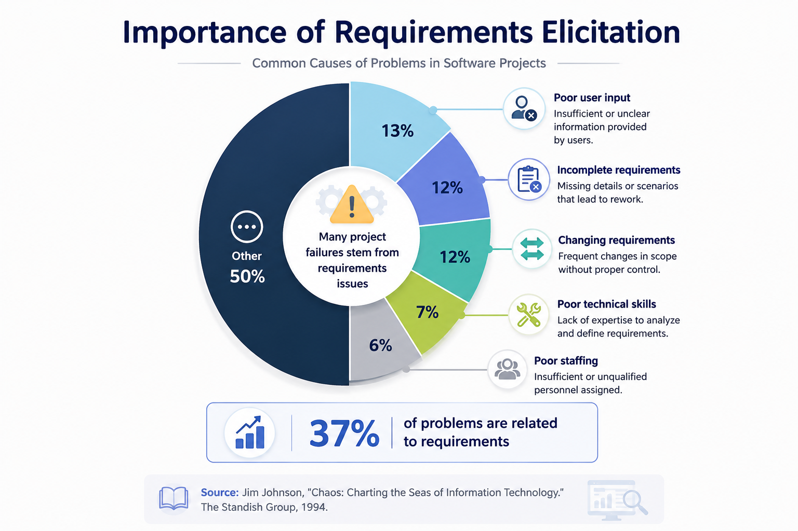
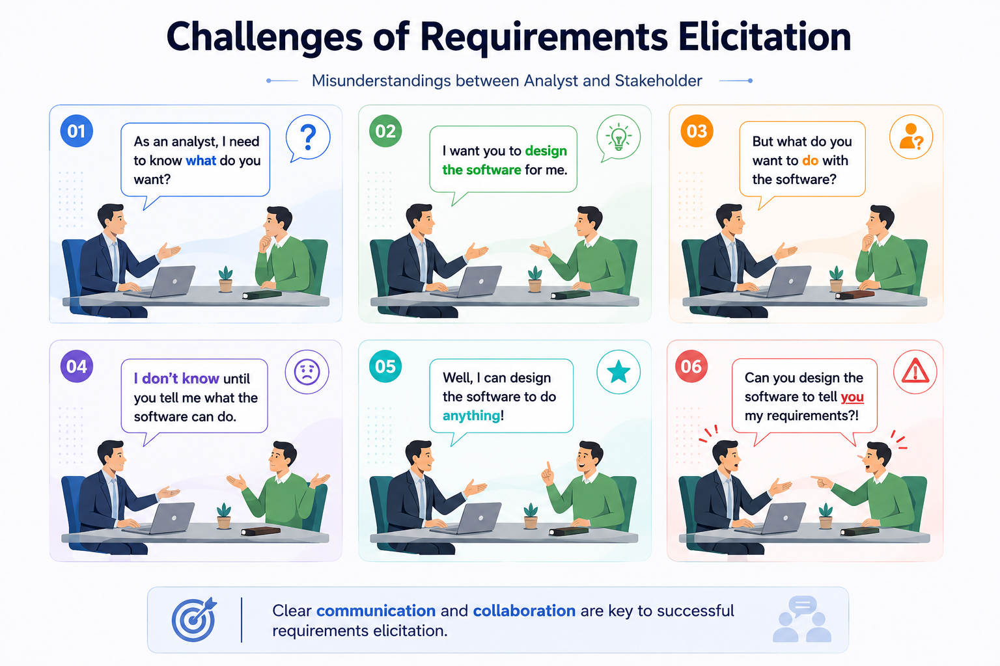

Software Requirements Elicitation
The hardest question is often not how to build the software, but what exactly should be built—and why?
Justify functional and non-functional requirements and apply elicitation/analysis methods to produce software requirements.
From stakeholder reality to an agreed specification
- Requirements are capabilities the system must deliver and are documented in a requirements specification that may form part of a contract.
- Requirements elicitation identifies and formulates the real capabilities and constraints for the future software system.
- The planning phase includes requirements elicitation, deriving use cases, and producing an iterative development plan.
- The team works closely with customers and users to understand business needs, determine real requirements, and prioritize them.
- Major activities include identifying problems/needs, constructing analysis models, formulating requirements, feasibility study, checking correctness and consistency, thinking about acceptance tests, and planning iterations.

Bad requirements are expensive
The requirements specification may be part of a contract, so missing or incorrect requirements can have legal and commercial consequences.
Poorly identified requirements cause rework: design, code and tests may all need to change when the real need is discovered late.
The lecture cites the Standish Group CHAOS study as an illustration that requirements-related problems were a major source of software project difficulty.

University advising
“Students complain about long queues” is a problem statement, not yet a requirement. Elicitation asks why queues occur, who is affected, what policies constrain scheduling, and then derives testable capabilities such as online appointment booking, advisor availability display, and queue-status notifications.
Clinic scheduling
“Make booking easier” is vague. After observing receptionists and interviewing patients, the team may derive: “The system shall let a patient search available appointments by specialty, physician and date and confirm a selected slot.”
Elicitation does not simply record wishes. It discovers the underlying problem, negotiates priorities and constraints, and turns stakeholder language into requirements precise enough to design, build and test.
The section below adds clarification for self-study.
What this lesson is based on
Chapter 4 — Software Requirements Elicitation lecture slides supplied for CPCS 351.
Be ready to distinguish a problem/need, a stakeholder wish, and a testable system requirement.